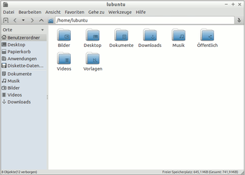
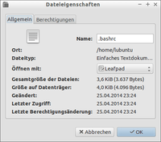
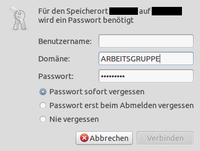

PCMan File Manager
Dieser Artikel wurde für die folgenden Ubuntu-Versionen getestet:
Ubuntu 16.04 Xenial Xerus
Ubuntu 14.04 Trusty Tahr
Zum Verständnis dieses Artikels sind folgende Seiten hilfreich:
Einen Editor nutzen, optional
Ein Terminal öffnen, optional
|  |
| PCManFM 1.2 (Lubuntu 14.04) |
Der PCMan Filemanager  oder abgekürzt PCManFM ist als schlanker und schneller Dateimanager entwickelt worden, um auch auf älteren Rechnern einsetzbar zu sein. Das Projekt wurde 2006 vom taiwanesischen Entwickler Hong Yen Jee ins Leben gerufen. Dabei unterstützt das Programm Registerkarten, Tabbed-Browsing (wie z.B. Firefox oder neuere Versionen von Nautilus). Außerdem werden nicht UTF8-konforme Zeichensätze unterstützt. PCManFM ist der Standard-Dateimanager der Desktopumgebung LXDE und dort auch für das Zeichnen der Desktopsymbole zuständig.
oder abgekürzt PCManFM ist als schlanker und schneller Dateimanager entwickelt worden, um auch auf älteren Rechnern einsetzbar zu sein. Das Projekt wurde 2006 vom taiwanesischen Entwickler Hong Yen Jee ins Leben gerufen. Dabei unterstützt das Programm Registerkarten, Tabbed-Browsing (wie z.B. Firefox oder neuere Versionen von Nautilus). Außerdem werden nicht UTF8-konforme Zeichensätze unterstützt. PCManFM ist der Standard-Dateimanager der Desktopumgebung LXDE und dort auch für das Zeichnen der Desktopsymbole zuständig.
In Ubuntu 16.04 findet sich die Version 1.2.4 in den offiziellen Paketquellen. Diese Version markiert das vorläufige Ende der Neuentwicklung, die mit der Version 0.6 begonnen wurde. Eine interessante neuere Funktion sind benutzerdefinierten Aktionen, mit denen sich das Kontextmenü  anpassen lässt.
anpassen lässt.
Eine Abspaltung und Weiterentwicklung der Vorgängerversion 0.5 ist SpaceFM.
Installation¶
Unter Lubuntu ist das Programm bereits vorinstalliert. Ansonsten installiert [1] man folgendes Paket:
pcmanfm (universe)
 mit apturl
mit apturl
Paketliste zum Kopieren:
sudo apt-get install pcmanfm
sudo aptitude install pcmanfm
Ansichten¶
Das Ansichtsfenster ist in drei Bereiche gegliedert:
Die Adressleiste (oben)
Die Seitenleiste (links)
Das Hauptfenster (rechts)
Adressleiste¶
Hier ist immer der momentan im Hauptfenster angezeigte Pfad zu sehen. Des Weiteren kann man auch über die Adressleiste zu anderen Pfaden wechseln.
Die Seitenleiste¶
Die Seitenleiste lässt sich im Menüreiter "Ansicht" um- oder ausschalten. Will man sie umschalten, so hat man die Wahl zwischen "Ordner anzeigen" und "Orte anzeigen". Ersteres zeigt eine Baumstruktur mit dem kompletten System an, letzteres die eingehängten bzw. angeschlossenen Laufwerke.
Über die Seitenleiste erfolgt auch die Verwaltung externer Datenträger wie z.B. USB-Sticks. Diese erhalten im Gegensatz zu Nautilus kein Symbol auf dem Desktop. Zum Aushängen bzw. "Sicher entfernen" dient ein Pfeil-Symbol hinter der Datenträgerbezeichnung (siehe Abbildung rechts). Dazu muss die Seitenleiste im Menü unter "Ansicht" → "Seitenleiste" auf "Orte" eingestellt ein.
Der Abschnitt unterhalb des horizontalen Trennstrichs dient zur Aufnahme von benutzerdefinierten Lesezeichen. Dazu zieht man einen Ordner bei gedrückter linker Maustaste  in diesen Bereich.
in diesen Bereich.
Das Hauptfenster¶
Im Hauptfenster wird, wie man es auch aus den meisten anderen Dateimanagern gewohnt ist, der Inhalt des in der Adressleiste genannten Ordners angezeigt.
Funktionen¶
Verknüpfung mit Programmen¶
|  |
| Dateieigenschaften |
Aus dem PCManFM heraus lassen sich die unterschiedlichen Dateien mit ihren entsprechenden Programmen starten. Um eine Datei einmalig mit einem anderen als dem standardmäßig ausgewählten Programm zu öffnen, einen
- Rechtsklick auf die Datei machen und
"Öffnen mit..." auswählen.
Dann das entsprechende Programm wählen. Sollte es nicht aufgelistet sein, kann man es unter "Mit anderer Anwendung öffnen" auswählen (die meisten Programme sind unter /usr/bin/ zu finden). Möchte man die Dateizuordnung dauerhaft ändern,
markiert bzw. wählt man die entsprechende Datei aus
ein
Rechtsklick und ein Klick auf "Eigenschaften"das gewünschte Programm unter "Öffnen mit: anderem Programm" auswählen
die Option "Ausgewähltes Programm als Standard setzen" aktivieren
Dateirechte¶
Um Zugriffsrechte von Dateien im PCManFM zu ändern, muss man
einen
Rechtsklick auf die Datei machen, "Eigenschaften" wählen und im Reiter
"Berechtigungen" selbige ändern.
Für Dateien außerhalb des eigenen Homeverzeichnis muss man für diesen Schritt den jeweiligen Ordner als root öffnen (siehe auch Dateimanager). Dazu wählt man in der Menüleiste den Punkt "Werkzeug" → "Aktuellen Ordner als Root öffnen". Nach der obligatorischen Passworteingabe sollte das Ändern der Zugriffsrechte möglich sein. Erhält man stattdessen einen Hinweis, ist der Befehl gksudo %s in den Einstellungen nachzutragen (und ab 13.10 das Paket gksu zu installieren).
Seit Version 1.2 ist diese praktische Funktion nicht mehr im Menüpunkt "Werkzeug" vorhanden. Sie kann aber über eine benutzerdefinierte Aktion nachgebildet werden.
Suchfunktion¶
Seit Version 1.1.2 bzw. Ubuntu 13.10 ist (wieder) eine integrierte Suchfunktion enthalten. Bei älteren Ubuntu-Versionen kann man Catfish zum Suchen verwenden.
Datei/Ordner anlegen¶
Möchte man eine Datei oder einen Ordner neu anlegen, so wählt man im Menü "Datei" → "Neu anlegen" → "Ordner" oder "Datei" → "Neu anlegen" → "Textdatei". Möchte man eine Datei oder einen Ordner in einem anderen Ordner erstellen, ohne in diesen wechseln zu müssen, so macht man einen Rechtsklick auf selbigen und wählt "Neu anlegen" → "Ordner" oder "Neu anlegen" → "Textdatei".
Seit Version 1.2 werden im Ordner ~/Vorlagen/ befindliche Dateien zusätzlich angeboten. Diese Funktion ist allerdings nur über das Kontextmenü verfügbar, nicht über "Datei" → "Neu".
Papierkorb¶
Eine Datei oder ein Ordner lässt sich mit
Entf oder "Rechtsklick" → "Löschen" in den Papierkorb verschieben. Mit
⇧ +
Entf kann der Papierkorb umgangen und eine Datei unwiderruflich gelöscht werden. Im Gegensatz zu anderen Dateimanagern ist die Handhabung zur Umgehung des Papierkorbs ungewohnt: die Taste
⇧ wird erst dann berücksichtigt, nachdem man das Kontextmenü bereits aufgerufen hat.
Das Leeren des Papierkorbs erfolgt über das Kontextmenü in der Seitenleiste. Die Funktion "Papierkorb leeren" wird allerdings nur dann angezeigt, wenn unter "Ansicht" → "Seitenleiste" → "Orte" eingestellt ist.
Wer sich dagegen den Papierkorb auf dem Desktop anzeigen lässt, vermisst schnell die Möglichkeit, diesen über das Kontextmenü auszuleeren. Möglich wird das erst, wenn man sich eine benutzerdefinierte Aktion dafür einrichtet.
Tabs¶
Mit der  dritten Maustaste bzw. dem Mausrad lassen sich Ordner in neuen Reitern (Tabs) öffnen. Dadurch sind schnelle Ordnerwechsel beim Arbeiten möglich.
dritten Maustaste bzw. dem Mausrad lassen sich Ordner in neuen Reitern (Tabs) öffnen. Dadurch sind schnelle Ordnerwechsel beim Arbeiten möglich.
Freigaben¶
Zugriff auf Freigaben anderer Computer im Netzwerk erhält man über "Gehe zu" → "Netzwerk". Dazu ist das Paket gvfs-backends zwingend erforderlich. Dieses ist zwar oft vorinstalliert, aber bei Problemen sollte das Vorhandensein zuerst geprüft werden. Evtl. hilft auch der Abschnitt Fehler beim Browsen im Netzwerk am Ende des Artikels weiter.
|  |
| Freigabe einbinden |
Um auch auf kennwortgeschützte Freigaben zugreifen zu können, ergänzt man den Freigabenamen in der Pfadleiste (Beispiel: smb://SERVER/FREIGABE) und bestätigt mit
⏎ . Im darauf folgenden Dialog (siehe Abbildung) müssen
der Benutzername
die Arbeitsgruppe und
das Kennwort
ebenfalls ergänzt werden.
Für die Einrichtung von persönlichen Freigaben steht kein grafisches Werkzeug zur Verfügung. Erstellt werden diese weiterhin mit Samba und net usershare (siehe auch Persönliche Freigaben im Terminal). Allerdings kann man ab Lubuntu 14.04 eine benutzerdefinierte Aktion nutzen, um den Umgang mit Freigaben zu erleichtern.
Möchte man systemweite Freigaben grafisch einrichten, bietet sich system-config-samba an.
Symbolische Verknüpfungen¶
Mit Programmversionen 1.2 oder neuer lassen sich symbolische Verknüpfungen ("Links") durch Drag&Drop bei gleichzeitigem Drücken von Strg + ⇧ oder über den Menüpunkt Bearbeiten → Neue Verknüpfung … erzeugen. Die so erzeugte Linkdatei lässt sich wie jede andere umbenennen, kopieren oder verschieben. Die Erzeugung einer Verknüpfung im selben Ordner wie die Originaldatei ist nicht vorgesehen.
Weitere Funktionen¶
PCManFM besitzt die Möglichkeit, Lesezeichen zu erstellen. Solche Lesezeichen machen es möglich, auch nach dem Neustart des Programms wieder schnell an die in Lesezeichen gespeicherten Orte zurückzukehren. Außerdem ist auch hier Drag & Drop möglich. Das heißt, man kann Dateien einfach durch Auswählen und gedrückt Halten der linken Maustaste in andere Ordner verschieben.
Seit Version 1.2 bietet PCManFM die Möglichkeit, wie bei Thunar oder Nautilus benutzerdefinierte Aktionen in das Kontextmenü () einzubinden. Mehr Details enthält der Artikel PCMan File Manager/Benutzerdefinierte Aktionen (u.a. eine Lösung, die fehlende Funktion "Aktuellen Ordner als Root öffnen" nachzurüsten).
Einstellungen¶
Unter "Bearbeiten" → "Einstellungen" lassen sich die Einstellungen des Dateimanagers ändern. Im Reiter "Allgemein" kann man
die Größe der Symbole
wie Lesezeichen geöffnet werden
Zeichenkodierung
Miniaturvorschaubilder ein-/ausschalten
das verwendete Terminal
einstellen. In neueren Programmversionen sind diese Einstellungen auf die Reiter "Allgemein", "Ansicht", "Datenträgerverwaltung" und "Erweitert" verteilt.
Desktop¶
Bei der Version 0.5 bietet sich unter "Desktop" die Möglichkeit, Dateien die im Homeverzeichnis liegen, auf dem Desktop anzeigen zu lassen. Sollte man allerdings einen Fenstermanager einsetzen, der ebenfalls den Desktop verwaltet (z.B. Fluxbox), kann es zu Konflikten kommen.
Neuere Version enthalten diese Einstellungsmöglichkeit nicht mehr. Stattdessen klickt man mit der rechten Maustaste an einer freien Stelle auf dem Desktop und wählt den Punkt "Einstellungen der Arbeitsfläche" aus. Alternativ kann man den folgenden Befehl verwenden:
pcmanfm --desktop-pref
Über den Punkt "Erscheinungsbild" kann ein Hintergrundbild ausgewählt und die Schriftgröße unterhalb der Desktop-Symbole konfiguriert werden. Der Reiter "Fortgeschritten" bietet an, dass von Openbox traditionell verwendete Root-Menü zu aktivieren. Wie man sich dieses den eigenen Wünschen entsprechend anpasst, ist im Artikel Openbox/Pipemenü beschrieben. Eben genannter Befehl dient auch dazu, das Root-Menü wieder zu deaktivieren.
Das Erstellen von Desktop-Symbolen ist unter LXDE Einstellungen zu finden.
Tastenkombinationen¶
| Tastenkombinationen | |
| Tasten | Funktion |
| Strg + A | Alles auswählen |
| Strg + C | Kopieren |
| Strg + D | Zu Lesezeichen hinzufügen |
| Strg + H | Verborgene Dateien anzeigen |
| Strg + I | Auswahl umkehren |
| Strg + N | Neues Fenster |
| Strg + T | Neuer Reiter |
| Strg + Q | Beenden |
| Strg + V | Einfügen |
| Strg + W | Reiter schließen |
| Strg + X | Ausschneiden |
| Strg + Tab ⇆ oder Strg + Bild ↓ | Tabs von links nach rechts wechseln |
| Strg + Tab ⇆ + ⇧ oder Strg + Bild ↑ | Tabs von rechts nach links wechseln |
| Strg + ⇧ + N | neuen Ordner erstellen |
| Entf | Löschen |
| F2 | Umbenennen |
| F3 | Zwei-Fenster-Modus (ab Version 1.2.0) |
| F4 | Aktuellen Ordner im Terminal öffnen |
| F5 | Aktualisieren |
| F9 | Seitenleiste öffnen/schließen |
| Alt + ⏎ | Eigenschaften |
| Alt + ← | In der Chronik zurück |
| Alt + → | In der Chronik vor |
| ⌫ oder Alt + ↑ | In der Ordnerhierachie eine Ebene nach oben |
| Alt + Pos1 | Persönlicher Ordner |
Problembehebung¶
Aushängen von Laufwerken wird nicht angeboten¶
Das Aushängen von USB-Sticks/-HDDs ist über die "Orte"-Ansicht im linken Fenster möglich, nicht über die Baumansicht. Zum Aushängen ist daher ein kurzes Umschalten nötig.
Mit Nautilus den Desktop verwalten¶
Wer unter LXDE bzw. Lubuntu den Desktop nicht durch PCManFM verwalten lassen möchte, kann dies unter /etc/xdg/lxsession/Lubuntu/autostart ändern [2]. Hier ein Beispiel für den Dateimanager Nautilus:
#@pcmanfm -d @nautilus
Nautilus sollte dazu bereits installiert sein. Nach einem Neustart erfolgt die Verwaltung des Desktops nicht mehr durch PCManFM.
PCManFM durch Thunar ersetzen¶
Alternativ kann man auch Thunar nachinstallieren. Besonders einfach klappt die Umstellung, wenn man PCManFM nicht deinstalliert und weiterhin für die Verwaltung des Desktops nutzt. Der vorhandene Programmstarter für den Dateimanager im LXDE-Panel wird auf Thunar umgestellt. Mehr ist nicht notwendig.
Allerdings werden externe Datenträger wie USB-Sticks weiterhin mit PCManFM geöffnet. Dann muss man noch die Datenträgerverwaltung in Thunar aktivieren (und die von PCManFM gegebenenfalls deaktivieren).
Passwort zum Einhängen von Partitionen wird benötigt¶
Unter Ubuntu 12.04 kann es sein, dass beim Einhängen einer Partition mit PCManFM ein Passwort verlangt wird. Diese Passwortabfrage deaktiviert man, indem man die Datei /usr/share/polkit-1/actions/org.freedesktop.udisks.policy mit Root-Rechten bearbeitet. Hier sucht man den folgenden Abschnitt:
<action id="org.freedesktop.udisks.filesystem-mount-system-internal">
...
<defaults>
...
<allow_active>auth_admin_keep</allow_active>
</defaults>
</action>und ändert die Zeile mit <allow_active> so ab, dass sie wie folgt aussieht:
<allow_active>yes</allow_active>
Nach dem Abspeichern sollte eine Partition nur durch das Anwählen in PCManFM eingehängt werden.
Ort Anwendungen nicht nutzbar¶
Wenn die Ansicht des Programm-Menüs (menu://applications) hängt, kann es ausreichen, den Prozess menu-cached zu beenden, um wieder auf »Anwendungen« zugreifen zu können. Das ist z.B. mit diesem Befehl möglich:
pkill menu-cached
Fehler beim Browsen im Netzwerk¶
Versucht man beim Browsen im Netzwerk eine angezeigte Freigabe zu öffnen, die noch nicht eingehängt ("gemountet") ist, so sollte diese dabei eigentlich wie bei Nautilus oder Thunar mittels gvfs-mount automatisch eingehängt werden. Dies geschieht jedoch nicht, statt dessen erscheint die Fehlermeldung:
"Der angegebene Ort ist nicht eingehängt"
Lösung: Die Freigabe wird dann automatisch eingehängt, wenn man sie nicht im gleichen Fenster, sondern in einem anderen Fenster oder Tab öffnet. Alternativ kann man die Freigabe auch im Terminal mit dem Befehl:
gvfs-mount smb://SERVER/FREIGABE
einhängen (bei anderen Netzwerk-Protokollen ist smb:// entsprechend zu ersetzen, z.B. ftp:// oder sftp://). Dieses Verhalten wurde unter Lubuntu 13.04 mit PCManFM in der Version 1.1.0 beobachtet.
Links¶
PCManFM
im LXDE-Wiki
Schlanker Datei-Jongleur - Dateimanager Pcmanfm mit Tabbed Browsing
 - Artikel LinuxUser 04/2007
- Artikel LinuxUser 04/2007SpaceFM - Abspaltung (Fork) einer frühen PCManFM-Version
Dateimanager
 Übersichtsartikel
Übersichtsartikel
- Erstellt mit Inyoka
-
 2004 – 2017 ubuntuusers.de • Einige Rechte vorbehalten
2004 – 2017 ubuntuusers.de • Einige Rechte vorbehalten
Lizenz • Kontakt • Datenschutz • Impressum • Serverstatus -
Serverhousing gespendet von